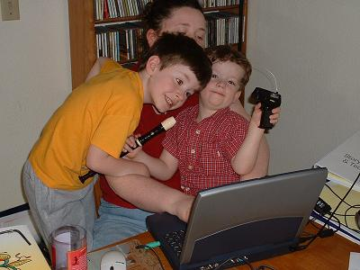

| 

|
 |
With gratitude to... |
- my husband Andre. Thank you for not only keeping me fed and in clean clothes, but for trusting me that this was the right path to put our family on. And for that wonderful knack you have for making me laugh. Here’s to a future with more time together.
- my sons Noah and Thomas. Thank you for trying to understand why Momma was always so busy. I love many things in this world but you two are my greatest treasure. Being with each of you is the best part of my day.
- my mom and dad for being my biggest fans from day one and continuing to support me in the choices I make. Special thanks to mom for not fussing over my “burning the candle at both ends” too often. Just often enough to let me know I’m loved.
- my supervisor, Judy, for cheering me on, having great patience with the effects of my stress level and being such a wise mentor and friend.
- Sno-Isle librarians Evie, Michael, Nancy M., Terry, Kathleen F., Erica and Lesly for your mentorship, support and affection.
- my staff, past and present, at the Brier Library. Thank you for understanding when my brain was in three different places and keeping the branch running smoothly. You make me look great!
- the super cool gang at SPL Central fiction department, Misha, Hannah, Linda, Jen and especially David for your kind words and faith in my abilities.
- Mike Eisenberg for speaking at the WLA Conference of 2001. I don’t remember what you talked about, but I knew from that moment on I couldn’t stand not to be a professional librarian.
- Joe Janes for unknowingly influencing my choice of schools by your charming words at the info session I attended. And for knowingly influencing me at the times I’ve needed direction.
- Harry Bruce for being a warm and honest advisor and an example of excellence worth striving for.
- Marie Potter and Nancy Gershenfeld for helping me feel at home in the iSchool and reassuring me when I wasn’t feeling my most confident. And just for being good company.
- Sarah L., Gregory T., Robert F. and Linda N. for being my “sanity check” crew and sharing frustrations and joys. Every grad student needs friends like you guys.
- Scott Barker for patiently shepherding our entire cohort through the insanity that is the first quarter of distance education. We couldn’t shower you with enough virtual baked goods to show our appreciation and affection.
- Emily, Heather and Stephanie for embarking on a class project so huge in scope. Also thanks to Hazel Taylor and Matt Saxton for warmly advising and encouraging us.
- the ALISS Officers of 2006-2007. Each of you is amazingly talented and I’m delighted that I’ve had the chance to work with you. I’ll be your reference any day.
- Grace Whiteaker for being an awesome advocate for distance education done right.
- each of my instructors, particularly those who were patient with me when real life spilled over into my academic life. Working and having a family while going to school is a tough gig. But through your support and understanding I made it through.
|
|
|
|